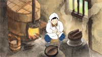
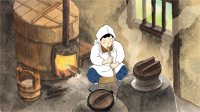
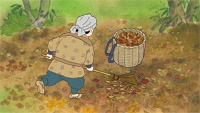
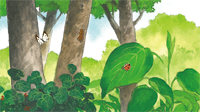
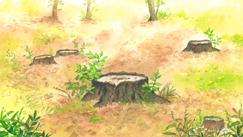

生きるって、人も植物も同じなのね。
小学校３年生の女の子さくらが雑木林で出会ったのは、優しい桜のおじいさん。
不思議な桜の妖精サクリンと一緒に、時と植物をめぐるさくらの冒険が始まる。
少しずつ見えてくる、雑木林のひみつとは？
短編アニメーション 完成
 
 

制作 株式会社エクラアニマル
スタッフ
脚本：池田 千城／コンテ・演出：本多 敏行
プロデューサー：豊永 ひとみ／音楽：中川 孝
協力：西原自然公園を育成する会
キャスト
さくら：小島 菜々子／サクリン：阿部 巡／桜じい：松井 幸一
「西原自然公園を育成する会（西東京市内の環境団体）」は、長年に亘ってみどりを守り育てる活動を続けており、東京都と国土交通省からその活動を称えた賞をいただきました。雑木林というのは勝手に存在するものでなく、人と自然が助け合って生まれたものです。
そのことをよりたくさんの人に知ってもらいたいという思いから、「西原自然公園を育成する会」とエクラアニマルは力を合わせて、『さくらとサクリン ～雑木林のひみつ～』というアニメ作品を制作しました。
完成したDVDは西東京市全小中学校へ配布し、完成上映会を多摩六都科学館にて開催する予定です。
その他の上映は現時点では未定ですが、全国的に広げたいと思っています。
この制作のため協賛金を募り、多くの方にご協力いただきましたが、まだ目標の金額200万円には達しておりません。引き続きご協力いただければ幸いです。
協賛金は一口1000円よりございます。ご協力をいただいた方には、お礼として「さくらとサクリン〜雑木林のひみつ〜」の完成版DVDをプレゼントさせていただきます。
詳しくはエクラアニマルへお問い合わせください。